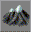
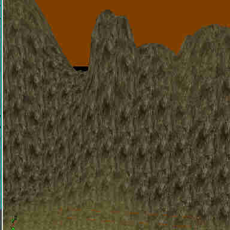

Using The Terrain Tool
Tahngarth: Here i will try to post a fairly comprehensive guide to the terrain tool, geared mostly to beginning mappers, but certainly useful to anyone. I will walk through creating a sample peice of terrain and describe how the tools are used to accomplish the task.
Terrain Building Features in UED 3.0
A lot of people probably look at a stock map in UT2003 such as DM-Antalus or DOM-SepukkuGorge and wonder, "how the heck do you make that terrain like that?" Well, hopefully by the bottom of this page, the how-to part will be less alien to you. In the top left toolbox of UED which contains the tools such as actor scaling, actor rotation, and face drag, you will see a shiny (if you're excited about this) button with a mountain on it. this is the Terrain Tool. Say good bye to the BSP Terrain button. Most of your work will be done in the perspective view, so you may want to make it larger when working with terrain.
The terrain tool is actually a collection of several more tools. When clicked, the terrain button opens a window containing all the functions you need to take an initially flat parcel of land, and 'paint' mountains or valleys on it, flatten them, create bumpy ground, paint textures on the surface, carve out holes to allow for tunnels and whatnot to connect to it, and scale and rotate those textures. The tool generates a heightmap as you edit, eliminating the need to import a texture into UnrealEd to add terrain to your level.
Creating Terrain and the TerrainInfo Actor
Some Terms:
- heightmap
- a greyscale texture used by Unrealed to generate terrain - black is low elevation, white is high elevation. it should be 64x64 pixels.
- TerrainInfo
- this is the actor that makes the terrain exist. The terrain is projected using this actor as the 3D origin. also contains the associated variables. must be within a zone that allows terrain to function (bTerrainZone=True)
Unrealed creates your terrain by generating a static mesh based on a heightmap texture, centered around a TerrainInfo actor. The TerrainInfo actor will be the XYZ origin of your terrain (i.e. the center) so keep that in mind when you place the terrain. You need to have empty space to put the terrain in, and then create the actor. That said, lets try it:
- Use the CubeBuilder to build a cube with dimensions 4096x4096x4096. Center it over the origin and subtract. Pick a light colored texture for it, this will make the terrain editing easier.
- Add an Actor >> Info >> ZoneInfo and position it within your new space.
- Set the following properties for the ZoneInfo:
- ZoneInfo → bTerrainZone = True (otherwise your terrain won't show up)
- ZoneLight → AmbientLight – You may also want to temporairly set this to to 180 or so, so that you can see your terrain when you work on it. Set it back to 0 when you want to put more elaborate lighting on it.
- Now click the Terrain Tool button in the top toolbox. it looks like this:  . This opens the [Terrain Editing]? window. Youll want to position this window so the perspective view and XY view are reasonably visible.
- The bottom half of the window has three tabs:
- Terrains – shows a list of all of the TerrainInfo actors in the level, and on the right side shows the heightmap and other information for the currently selected TerrainInfo; and allows you to add new TerrainInfos.
- Layers – shows the list of layers for the current Terrain selected on the Terrains tab. Layers contain the information about all the textures that are being used in the terrain. the list is hierarchal, with the base layer being shown first. the other layers are "painted" on top of each other in the order listed.
- Decorations- Allows you to add features to your terrain. Note: any decor you add here won't have any collsion (i.e. you can walk through them.) Only use this for things such as grass and such that shouldnt impede movement.
- Click the New button on the Terrains tab to create a new TerrainInfo. This will open up the New Terrain window, where you set the following properties: (IMPORTANT-you only have one chance to alter the options here, and the UnrealEd Goblin can become upset when you delete TerrainInfo actors, beacuse the heightmap remains in the terrain editor(and your level) list even after deleting the actor, and there's no delete button in the Terrain Editing window. having UED collect its garbage should fix that(i think), but Let's keep the UED goblin happy.
 )
)
When you're satisfied with the values, click OK.Property Usage Package Specify the name of the package to put the terrain information in. For this guide (but also good in practice), put this in MyLevel. Group You can specify a group within the package. Not required, for this you can leave it blank. Name Name your Terrain. Giving it a descriptive name will help you identify which is which if you have more than one terrain, but for this guide, call it MyTerrain. Xsize and Ysize Control the dimensions of the terrain. It is important to note that these are really scale values. That is, the heightmap texture is 64x64 pixels, and the actual dimensions of the terrain will be (64 x Xsize) by (64 x Ysize). The default values of 256 x 256 will cause our terrain to extend way beyond the dimensions of the cube you created. since our room is 4096 x 4096, set these values to 64 (64x64=4096). Height Self explanitory. Your hills and valleys cant stretch outside of this height. You dont need to change this unless you need it to be bigger (unlikely). - Now position the HeightInfo actor that appears in the level, and position it in the center of your cube.
Great! Now we have some nice, completely invisible terrain. Before you can work on your terrain (or use the terrain generator) you need to define at least a base layer. Open up the texture browser and find the texture you want the majority of the terrain to look like. For our example, open the ArboreaTerrain package, and find and select Sand01AR. This is a plain dirt texture that makes a good base. - In the Terrain Editing window, click on the Layers tab, then click the New... button. This opens a window similar to the New Terrain button. Use Mylevel for the Package, and call the layer Dirt_Base or something similar so you know what it is. The other properties work as follows:
Property Usage AlphaHeight and AlphaWidth These directly affect the size of the texture on the landscape. You want these values to match the dimensions of the heightmap, which is 64x64 here. Set these accordingly. AlphaFill Sets the tint and opacity (alpha channel in image editing terms) of the layer. This property has four values: A (alpha) and the RGB color channels. The base layer should be completely opaque, so set A=0 and R G and B = 255; the color box should show white. ColorFill Color to use for drawing. White (R=255,G=255,B=255) means draw everything in its default colors. If any color component is lower than 255 the specific color component of the Texture or Font will be drawn darker. (or more translucent, see color blending) UScale and VScale The initial scaling factors of the texture. Leave these at 1, it is easier to adjust the scaling with the Texture Scale terrain tool. - Hit OK and create the layer. At this point, you should set Realtime Preview on by clicking the little joystick in the perspective view. Base layer defined, rebuilding the map should cause your terrain's surface to appear. Do a full rebuild of the map.
Ta-Da! You now have a brand new, tottaly flat and barren parcel of dirt! Now, we will discuss how to turn this featureless plane into something more interesting first by using the terrain generator, and then by manually editing the surface with the terain editor's tools.
The Terrain Generator
Can't think of how you want your terrain to look? Want UnrealEd to give you something more interesting to start with? Use the terrain generator.
To use the terrain generator, click the Terrain Tool, and in the terrain editing box, select your terraininfo. Then look at the top of the terrain editing window, and you will see two tabs. The terrain generator is on the tab labled Misc. Just supply some parameters, and click Build. Instant mountains. The settings are as follows:
| Setting | Function |
| Steps | Controls how many passes the generator makes over the terrain. more steps mean more hills. |
| Strength | Controls the magnitude of the hills being generated. Max value 255. High values mean steep, craggy peaks that leave almost no place to walk, and low values mean gentle rolling hills that are pretty flat overall. |
| Use entire Heightmap? | Tick this to have the generated surface use all of the terrain space. Unticked, only uses what is currently selected with the Select tool in the terrain editor. |
More on Layers
In order to vary the look of your terrain, you must add additional layers. Select any additonal textures you want, and when creating the layers, set the color settings to the exact opposite of the base layer, otherwise the base layer will show over all of the others rendering other layers invisible. Say you made some craggy peaks in the terrain you created above, and you want them to have a rocky surface different from the dirt texture used for the base layer. All you have to do is make a layer with the rocky texture, and then use the terrain tools to apply it to the surface. Let's look at these tools now.
The Paint Tool
This tool allows you to "paint" mountains and valleys on your terrain. This and all of the tools in the terrain editor have two functions, controlled by the left mouse button and the right. For the paint tool, using cntrl-left mouse button combination (hereafter LMB) raises the terrain height where you click in drag in the [3-D view], and using the cntrl-right mouse button combination (RMB) lowers it. If you find that a huge pillar skyrockets out of the ground where you click, just drag the Strength slider to the left to reduce the magnitude of the change.
Roland: But don't select a layer with a texture...if you do this, you paint the texture, not the height of the terrain...
Layering
To change the textures of terrain instead of having the same boring texture that doesn't look realistic for mountains or the like, open the terrain tool, click on the TerrainInfo you want to edit, and then click on the 'Layers'
tab. Before you do anything else, open up the Texture Browser and select a texture to be used as a new texture for (4 example) your new mountain you want to look realistic. Once done that, go back to the 'Terrain Editing Tool' and in the 'Layer' tab, click on the button called ' New '. A new window will open.
You'll see Package, Group, Name, Alpha Height, Alpha Width, Alpha fill, Color Fill, UScale and VScale. For Package, type in MyLevel. (which you should always type in if your doing Terrain or importing of textures or w/e) For 'Group', you can either leave it blank, or type in something like TerrainLayers. For Name, Type whatever you want, for example, Terrain1. If you are a beginner, I would leave the Alpha height and Width , and Alpha Fill alone. For color fill, I believe this is the color that will 'Fade' in to the other layers when you paint the texture on. This must be a different color for each layer. ( Ex- A layer's color fill cannot be the same as another layers color fill. Ie. Red-Red is wrong and Red-Blue will work great  )
)
U and VScale are how big the texture will be. I works exactly like the surface properties under the tab Pan/Rot/Scale.
Finally, when you are satisfied with your new layer's settings, click 'Ok .' Now, there should be a new 'Layer' called Terrain1 (or w/e you called it under 'Name' ) Now click on the layer and then click on the 'Painting' tool under the 'Terrain Editing Tools' Menu. Now, on your terrain in your level. Use the paint controls ( CTR+LMB to erase the texture and CTR-RMB to add the texture, I believe ) on the area you want to change the texture to. depending on the 'Strength' you set, the texture will 'fade' in covering the older texture.
![[myth_terrain_layer1]](images/myth-terrain-layer1.jpeg) Before Layering. 
After Layering (Three layers : Grass, Mountain Side, Rocky Top.) |
Vertex Edit Tool
Visibility Tool
At first look at this tool, I thought, "this is a useless tool, a tool that nobody will ever use." I've just found out what people use it for. However, I will just explain this tool and leave the implementation up to you, for now at least. What this tool does is change the area that you have used it on, from a solid surface, to a non-solid/invisible surface. CTRL-RMB makes it Invisible/Non-Solid and CTRL-LMB makes it Visible/Solid.
Pitfalls of Terrain Creation in Unreal 2's UnrealEd
For some reason, the creation of terrain has been made somewhat tricky, because the Terrain Editing palette is missing the ability to create TerrainInfo Actors by itself, and of course, a blank heightmap. My guess is that Legend fell behind on their updates! The UT2003 editor seems to be in better shape. Honestly 
This means that you have to manually create the TerrainInfo actor, and then set the heightmap in the TerrainInfo's properties (e.g. MyLevel.heightmaps.map1). The heightmap texture has to already exist, or you'll crash UnrealEd. Then you can make use of the Terrain Editing tools in the palette, as above.
Discussion
Birelli: When I do this exact procedure with a 4096*4096 terrain block as it says in the tutorial, it comes out fine. However, if I try to make a terrain block that is 49152*49152 I get a GPF. Is there some sort of maximum terrain block size? Can someone else try to make a terrain block this big (x and y size 768 (768 * 64 = 49152))? I can't think of why there would be some limitation on the size of terrain, but it's always possible. Situations like this make you wish that UED would handle GPF's gracefully, ending the editor seems about the worst possible choice for handling this  .
.
Tahngarth: don't most programs terminate after a GPF? A crash generally does end a program after all.
Highlander: i have not used terrain quite that large, however with a 512x512 pixel terrain map i get a GPF if i smooth over the edge of the map, so id say there is some limit to how big the terrain can be. (keep in mind you can scale the terrain so that each pixel in the terrain map is worth more than 64 units)
AlphaOne: I tried some other tools over the edge of the map (moving away from the center) and it always crashed on me. The size of the terrain was double the default one. Also, I tried to decorate my map with trees. The static meshes displayed strangely: I could only see the leaves. The wooden parts were completely transparent. That happened with a couple different tree meshes.???!?!?!?!? Why?
G-LiTe: AlphaOne: Some static meshes only have leaves while others are a complete tree, they probably had a reason to do that. Look in the static mesh browser to see which you can use. Also, you're probably better of placing the trees seperately as terrain decolayers are non-solid, which means you'd walk right through the tree. (unless that's what you want or it's just background)
AlphaOne: I can see the whole tree. I want to use this methods just cause it's easier, and it has a good way of hiding trees from far away.
Mychaeel: You can use the static mesh's CullDistance property (in the Display section of the property sheet) to the same effect.
Tahngarth: the decorations tab is really meant for small things like grass and such. In fact I think only flat things will work properly with it.
ZxAnPhOrIaN: We need screens in here!!
Bot 40:Is there any way to rotate a terrain brush? Also, I can't find an external paint prog that can read 16 bit grayscale .bmp files so I can't rotate the heightmap outside UED and re-import.
Aphex: Sure is bot, try here: http://homepage.ntlworld.com/martingbell/ut2003/
ZxAnPhOrIaN: I have a tutorial on the Manipulating Terrain Page. Have a look!
MythOpus: I added info on how to 'paint' different textures on the same TerrainInfo. (layering)
Original9: Shadows become more unsharp when the heightmap gets smaller. Shadows are also affected by how big the scale of the terrian is. For example: Lets say that the heightmap is 128x128 and has a scale of 196x196x32. If the object is smaller the in the quad of the the terrian the shadow will not appear. Taller objects, however, will make a blurred shadow.
MinisterFish: For some reason, the terrain editor seems broke in UED 3.0 for Unreal 2. I was trying different ways in getting it to work but never can get it set up. This tutorial can get confusing too, compared to some like the one on leveldesigner.com. This page may need to be fused with some other terrain pages.
Tarquin: Much of this is getting refactored into:
- Terrain Mode – overview
- Terrain Texture Layer – adding and editing texture layers
- Terrain Decoration Layer – adding and editing deco layers (in progress!)
Kerlin: Ugh. Maybe Creating A Terrain should be pulled into this page. The more I look, the more I find stuff that needs reorg. Like I said, if I'm jackin stuff up, let me know...otherwise I'm gonna try to help out however I can.
Tarquin: Ah. This page is old and I think was up for deletion. I was cleaning up the terain area but I didn't make it all the way through
Kerlin: Then I guess this is a "Delete Me page"? Are you sure, though? Seems like some good info here. Just want to make sure we don't get rid of it unless it exists elsewhere.
Tarquin: It's not yet "Delete me". Terrain is the starting point. there's a few tutorial pages and I've not yet worked out what this page does. I'll give it some thought.